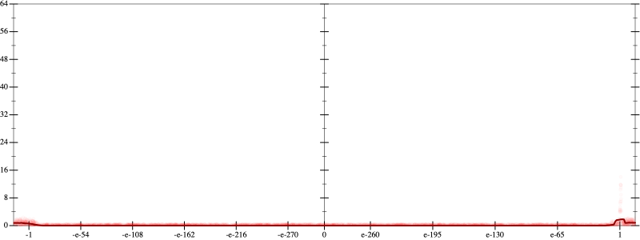
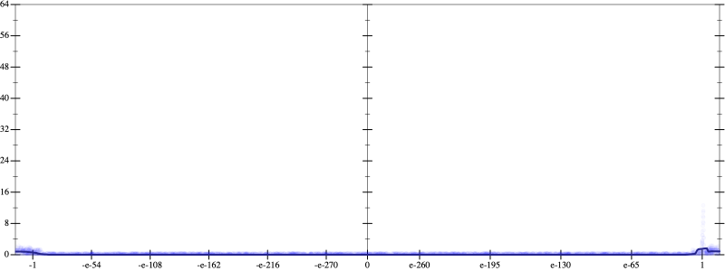
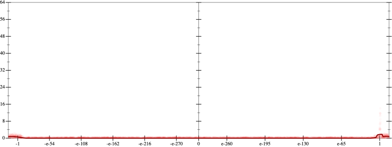
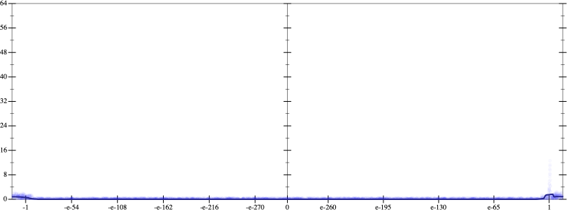

Initial program 0.1
\[\left(\left(\left(\left(\left(\left(\left(\left(\left(\left(\left(1.0 + -16.0 \cdot x\right) + 60.0 \cdot \left(x \cdot x\right)\right) + -93.333333 \cdot \left(\left(x \cdot x\right) \cdot x\right)\right) + 75.833333 \cdot \left(\left(\left(x \cdot x\right) \cdot x\right) \cdot x\right)\right) + -36.4 \cdot \left(\left(\left(\left(x \cdot x\right) \cdot x\right) \cdot x\right) \cdot x\right)\right) + 11.122222 \cdot \left(\left(\left(\left(\left(x \cdot x\right) \cdot x\right) \cdot x\right) \cdot x\right) \cdot x\right)\right) + -2.269841 \cdot \left(\left(\left(\left(\left(\left(x \cdot x\right) \cdot x\right) \cdot x\right) \cdot x\right) \cdot x\right) \cdot x\right)\right) + 0.319196 \cdot \left(\left(\left(\left(\left(\left(\left(x \cdot x\right) \cdot x\right) \cdot x\right) \cdot x\right) \cdot x\right) \cdot x\right) \cdot x\right)\right) + -0.031526 \cdot \left(\left(\left(\left(\left(\left(\left(\left(x \cdot x\right) \cdot x\right) \cdot x\right) \cdot x\right) \cdot x\right) \cdot x\right) \cdot x\right) \cdot x\right)\right) + 0.002207 \cdot \left(\left(\left(\left(\left(\left(\left(\left(\left(x \cdot x\right) \cdot x\right) \cdot x\right) \cdot x\right) \cdot x\right) \cdot x\right) \cdot x\right) \cdot x\right) \cdot x\right)\right) + -0.000109 \cdot \left(\left(\left(\left(\left(\left(\left(\left(\left(\left(x \cdot x\right) \cdot x\right) \cdot x\right) \cdot x\right) \cdot x\right) \cdot x\right) \cdot x\right) \cdot x\right) \cdot x\right) \cdot x\right)\right) + 4 \cdot 10^{-06} \cdot \left(\left(\left(\left(\left(\left(\left(\left(\left(\left(\left(x \cdot x\right) \cdot x\right) \cdot x\right) \cdot x\right) \cdot x\right) \cdot x\right) \cdot x\right) \cdot x\right) \cdot x\right) \cdot x\right) \cdot x\right)\]
Applied simplify0.1
\[\leadsto \color{blue}{\left(\left(\left(\left(\left(x \cdot x\right) \cdot \left(x \cdot x\right)\right) \cdot \left({x}^{3} \cdot {x}^{3}\right)\right) \cdot \left(x \cdot -0.000109 + 0.002207\right) + \left(\left(\left(x \cdot x\right) \cdot \left(x \cdot x\right)\right) \cdot \left(\left(x \cdot x\right) \cdot \left(x \cdot x\right)\right)\right) \cdot \left(0.319196 + -0.031526 \cdot x\right)\right) + \left(\left(\left(\left(x \cdot x\right) \cdot \left(x \cdot x\right)\right) \cdot \left(75.833333 + -36.4 \cdot x\right) + \left({x}^{3} \cdot {x}^{3}\right) \cdot \left(11.122222 + -2.269841 \cdot x\right)\right) + \left(\left(x \cdot x\right) \cdot \left(60.0 + -93.333333 \cdot x\right) + \left(x \cdot -16.0 + 1.0\right)\right)\right)\right) + \left(\left(4 \cdot 10^{-06} \cdot x\right) \cdot \left(x \cdot x\right)\right) \cdot \left(\left({x}^{3} \cdot {x}^{3}\right) \cdot {x}^{3}\right)}\]
Taylor expanded around 0 0.1
\[\leadsto \left(\left(\left(\left(\left(x \cdot x\right) \cdot \left(x \cdot x\right)\right) \cdot \left({x}^{3} \cdot {x}^{3}\right)\right) \cdot \left(x \cdot -0.000109 + 0.002207\right) + \left(\left(\left(x \cdot x\right) \cdot \left(x \cdot x\right)\right) \cdot \color{blue}{{x}^{4}}\right) \cdot \left(0.319196 + -0.031526 \cdot x\right)\right) + \left(\left(\left(\left(x \cdot x\right) \cdot \left(x \cdot x\right)\right) \cdot \left(75.833333 + -36.4 \cdot x\right) + \left({x}^{3} \cdot {x}^{3}\right) \cdot \left(11.122222 + -2.269841 \cdot x\right)\right) + \left(\left(x \cdot x\right) \cdot \left(60.0 + -93.333333 \cdot x\right) + \left(x \cdot -16.0 + 1.0\right)\right)\right)\right) + \left(\left(4 \cdot 10^{-06} \cdot x\right) \cdot \left(x \cdot x\right)\right) \cdot \left(\left({x}^{3} \cdot {x}^{3}\right) \cdot {x}^{3}\right)\]
Applied simplify0.1
\[\leadsto \color{blue}{\left(\left(\left(1.0 + -16.0 \cdot x\right) + \left(x \cdot -93.333333 + 60.0\right) \cdot \left(x \cdot x\right)\right) + \left(\left(\left(x \cdot -36.4 + 75.833333\right) \cdot \left(\left(x \cdot x\right) \cdot \left(x \cdot x\right)\right) + \left({x}^{3} \cdot {x}^{3}\right) \cdot \left(11.122222 + -2.269841 \cdot x\right)\right) + \left(\left(4 \cdot 10^{-06} \cdot x\right) \cdot \left(x \cdot x\right)\right) \cdot {\left({x}^{3}\right)}^{3}\right)\right) + \left(\left(x \cdot x\right) \cdot \left(x \cdot x\right)\right) \cdot \left(\left(-0.000109 \cdot x + 0.002207\right) \cdot \left({x}^{3} \cdot {x}^{3}\right) + {x}^{4} \cdot \left(0.319196 + -0.031526 \cdot x\right)\right)}\]
- Using strategy
rm Applied pow20.1
\[\leadsto \left(\left(\left(1.0 + -16.0 \cdot x\right) + \left(x \cdot -93.333333 + 60.0\right) \cdot \left(x \cdot x\right)\right) + \left(\left(\left(x \cdot -36.4 + 75.833333\right) \cdot \left(\left(x \cdot x\right) \cdot \left(x \cdot x\right)\right) + \left({x}^{3} \cdot {x}^{3}\right) \cdot \left(11.122222 + -2.269841 \cdot x\right)\right) + \left(\left(4 \cdot 10^{-06} \cdot x\right) \cdot \left(x \cdot x\right)\right) \cdot {\left({x}^{3}\right)}^{3}\right)\right) + \left(\left(x \cdot x\right) \cdot \color{blue}{{x}^{2}}\right) \cdot \left(\left(-0.000109 \cdot x + 0.002207\right) \cdot \left({x}^{3} \cdot {x}^{3}\right) + {x}^{4} \cdot \left(0.319196 + -0.031526 \cdot x\right)\right)\]
Applied pow20.1
\[\leadsto \left(\left(\left(1.0 + -16.0 \cdot x\right) + \left(x \cdot -93.333333 + 60.0\right) \cdot \left(x \cdot x\right)\right) + \left(\left(\left(x \cdot -36.4 + 75.833333\right) \cdot \left(\left(x \cdot x\right) \cdot \left(x \cdot x\right)\right) + \left({x}^{3} \cdot {x}^{3}\right) \cdot \left(11.122222 + -2.269841 \cdot x\right)\right) + \left(\left(4 \cdot 10^{-06} \cdot x\right) \cdot \left(x \cdot x\right)\right) \cdot {\left({x}^{3}\right)}^{3}\right)\right) + \left(\color{blue}{{x}^{2}} \cdot {x}^{2}\right) \cdot \left(\left(-0.000109 \cdot x + 0.002207\right) \cdot \left({x}^{3} \cdot {x}^{3}\right) + {x}^{4} \cdot \left(0.319196 + -0.031526 \cdot x\right)\right)\]
Applied pow-prod-up0.1
\[\leadsto \left(\left(\left(1.0 + -16.0 \cdot x\right) + \left(x \cdot -93.333333 + 60.0\right) \cdot \left(x \cdot x\right)\right) + \left(\left(\left(x \cdot -36.4 + 75.833333\right) \cdot \left(\left(x \cdot x\right) \cdot \left(x \cdot x\right)\right) + \left({x}^{3} \cdot {x}^{3}\right) \cdot \left(11.122222 + -2.269841 \cdot x\right)\right) + \left(\left(4 \cdot 10^{-06} \cdot x\right) \cdot \left(x \cdot x\right)\right) \cdot {\left({x}^{3}\right)}^{3}\right)\right) + \color{blue}{{x}^{\left(2 + 2\right)}} \cdot \left(\left(-0.000109 \cdot x + 0.002207\right) \cdot \left({x}^{3} \cdot {x}^{3}\right) + {x}^{4} \cdot \left(0.319196 + -0.031526 \cdot x\right)\right)\]
 
